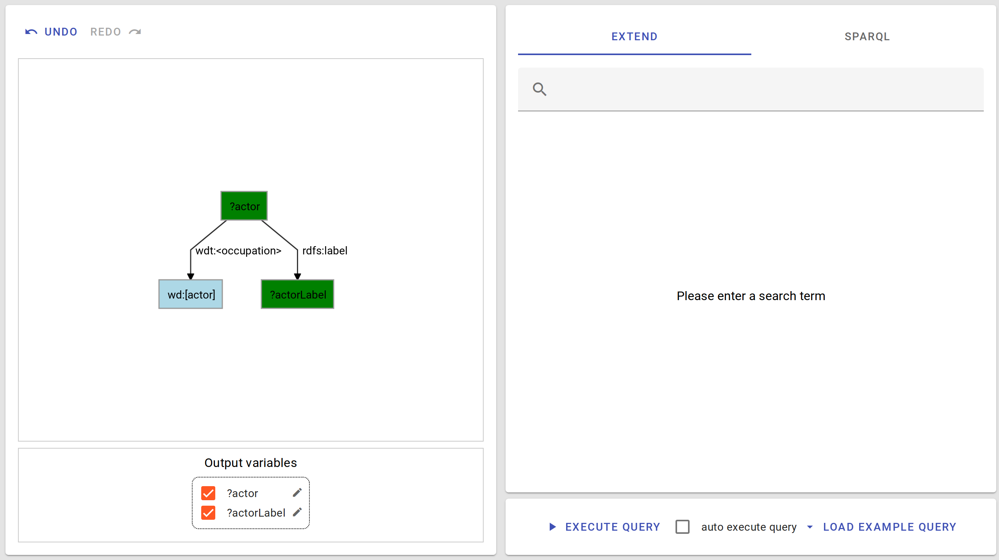
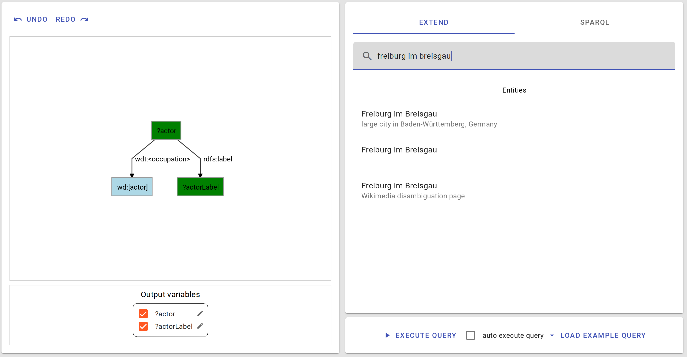
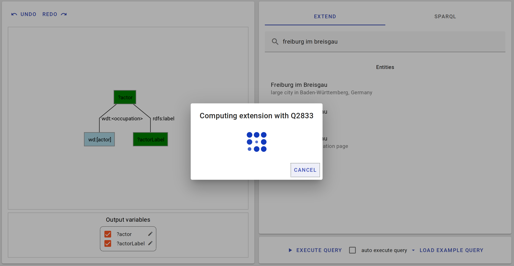
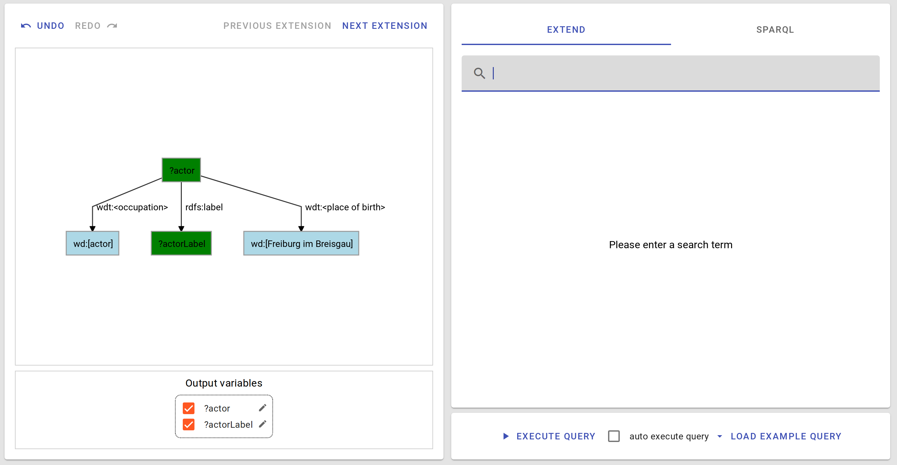

Query Extension is the way to construct queries in QLever UI2. You start with a small query and extend it. Then extend again, and again, until you are satisfied.

You can extend a query with either an entity or a predicate. Start by searching for it:

Then, select it (you can use the arrow keys to your select items in the results). QLever UI2 then tries to compute the best way to extend the query with your subject. .

If extensions are found, the best extension will be used.

You can use the “previous extension” / “next extension” Buttons to switch between other possible extensions.